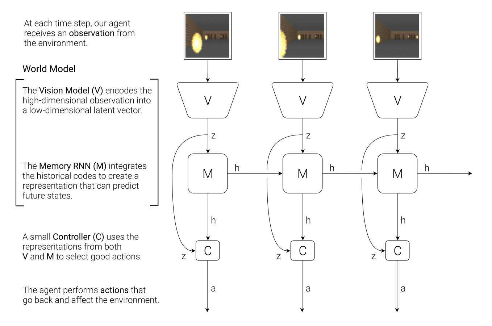
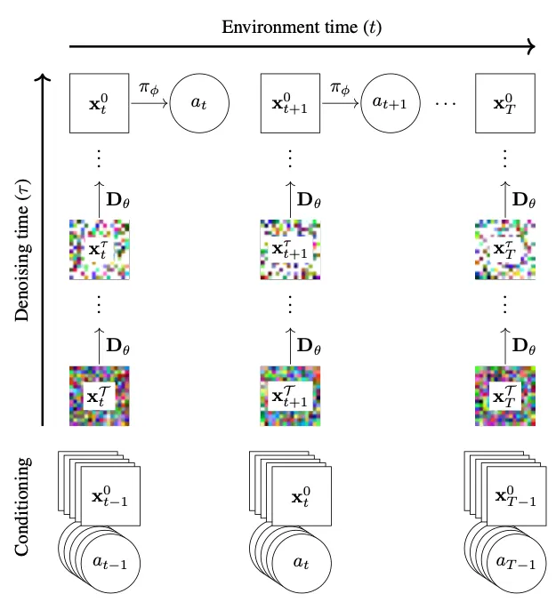
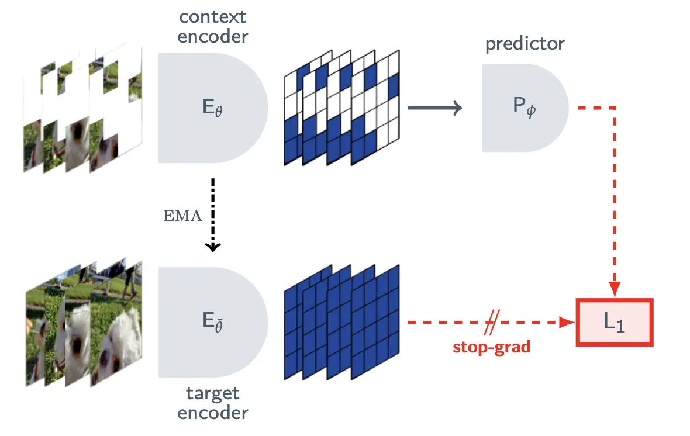
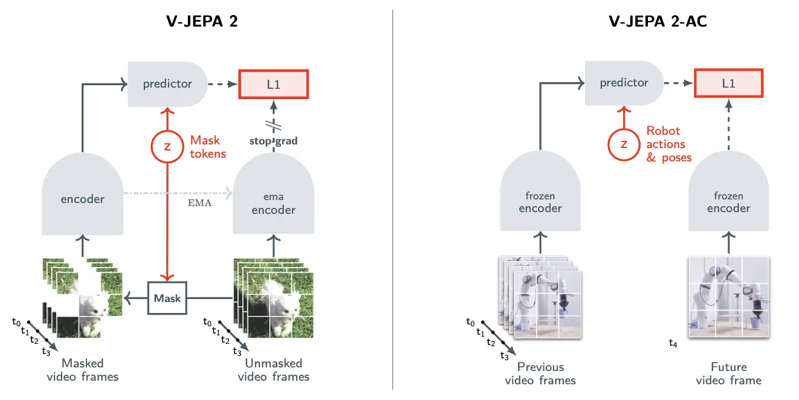

World Models
breakdown of the term ‘world model’. what, why and some brief technical details.
Across 2025 and into 2026, ‘world models’ have gathered hype within ai research and industry communities. High profile researchers Fei-Fei Li and Yann LeCun raised $1 billion for their companies, World Labs and Advanced Machine Intelligence (AMI) Labs, respectively, both focussed on developing ‘world models’.
World models are being proposed as the next iteration in developing intelligent systems, especially as it relates to developing physical or embodied ai.
As language models are trained to learn the nature of text and language, world models are trained to learn the dynamics of the physical world.
Humans may imagine different scenarios of the future or the past under different actions (counterfactual reasoning) while daydreaming or falling asleep. We are able to do this as we have an internal understanding of how the state of the world evolves spatiotemporally, especially under intervention from agents, either ourselves or others. Our brain is able to play possible actions forward to preview their consequences before committing to any of them. This ability to reason about counterfactuals and future states is crucial to our ability to reason and plan. World models aim to replicate this.
World models are intended to learn the same underlying representation of the world we hold, enabling prediction of future states and reasoning under the influence of interventions. That is:
\[P(s_{t+1} \mid s_t, a_t)\]- \(s\): the state of a system or world
- \(a\): an action taken by an agent
The \(a\) term here is the most important. Learning to predict under action, or intervention, separates a world model from both image/video generators and pure action models. Video/Image generators, such as Sora or Veo, are able to predict the next frame in a sequence quite well, however, there is no ability to intervene on the scene through direct action i.e. you cannot control a car within a generated video by acting on the steering wheel or brake. Action models, such as OpenVLA [1], output an action given an input state and a goal state. These models have learnt from imitation which action tends to achieve a goal, but they cannot reason about the effect of an arbitrary action on a state, as a world model can. i.e. a world model can answer the question, what happens to the state if i take this action? where action model answer what action achieves this state? World models can be seen as a combination of the two where prediction is conditioned on intervention, or action. This combination is what enables reasoning about counterfactuals.
World models, from a computer science perspective, were first introduced by Jürgen Schmidhuber in his 1990 paper Making the World Differentiable [2]. Here he introduces a recurrent neural network (RNN) with two aspects. Learn to predict the next state (i.e. what happens next) in a simulated world, then use that train an agent to act within the model’s simulation. Obviously the key here is the model having a good representation of the world (i.e. high next state prediction accuracy). At this time, there wasn’t enough compute for the idea to be as successful as it might have been.
In 2018, Schmidhuber, along with David Ha, published another paper titled World Models [3] which presented a vision model, a memory model and a controller. The vision model compressed raw pixel observations into a latent representation. The memory model learned to predict the next state (i.e. the RNN from 1990 paper). The controller decided action based upon the vision and memory model outputs. Here the the vision and memory model together are considered a world model. This was trained on observation of car racing and a first-person shooter game. After which the world model could generate new scenarios and ‘worlds’. An agent (controller) was then trained within the world models outputs. i.e. the world models daydreams. On transferring the agent into scenarios outside the model, it transferred successfully.

From this, a few high-profile different avenues to developing world models have been proposed. These are explored below.
Diffusion-based world models
Diffusion World Models are descendant from diffusion-based image and video generators
As a future state may have numerous valid outcomes, learning to predict this via a loss function such as mean-squared-error often causes a model to learn the combination of two valid future states. i.e. if a car may turn left or go straight at an intersection, the model may learn to predict a blend of the two; a blurry car straddling both directions. This is obviously an invalid future state which will never occur. Diffusion models solve for this by sampling a single possible future from a distribution instead of predicting a mean.
At inference, a diffusion model takes the recent state \(\leq t\) (i.e. frames), an action \(a_t\), and an initial state of pure noise \(x_{t+1}^{(K)}\). Across a period of denoising steps \(K\), a network \(n_\theta\) decides what is noise, takes it out and passes the result forward. This continues for a number of steps after which the noise is now a distinct next state based upon the action taken (i.e. the next frame).
\[n_\theta(x_{t+1}^{(k)}, k \mid x_{\le t}, a_t)\]\(x_{t+1}^{(k)}\): the next frame being generated, at denoising step \(k\) \(x_{\le t}\): the observed frames up to now \(a_t\): the action taken
This process is shown in the below figure.

Here, the previous frames and the action may be viewed as a proxy for a text prompt input into a text-to-image diffusion model. In a diffusion-based world model the prompt is the state of the world plus an intervention, action, on the world.
Training a network able to de-noise from random noise to a future state requires taking a real state and adding a variable amount of noise across it. Variable so that all noise levels (or stages in the denoising process) are represented. Generally, this can be expressed through the below:
\[L = \mathbb{E}_{x_0, \epsilon, k}\left[ \| \epsilon - n_\theta(x^{(k)}, k) \|^2 \right]\]\(x_0\): a real frame from the training data \(\epsilon\): the noise added to it \(x^{(k)}\): that frame after \(k\) steps of added noise \(n_\theta\): the network’s prediction of the noise
Although they overcome the averaging of future states, diffusion models are expensive to train, slow to inference. Going through the diffusion process requires denoising raw pixels at each stage, a few techniques exist to handle this. Latent diffusion overcomes this by using an autoencoder to compress each frame; diffusion then runs on the compressed representation and a decoder is used to produce pixels at the end of the process. The step count, how many denoising steps to iterate through, plays a crucial role in the tradeoff between accuracy and performance. More steps gives more precise output but takes longer. Some models overcome this by training a teacher model on a high step count and then distilling to a student model at a far reduced step count.
Diffusion models also focus energy on predicting pixels that may not have any large effect on the system (i.e. leaves on a tree).
DIAMOND [4] and DeepMind’s Genie 3 [5] are examples of diffusion-based world models.
Autoregressive world models
Autoregressive world models are most similar to large language models in that they attempt to predict the next state of the world through next token prediction. State, or frames, and actions both become tokens fed as input to a transformer which predicts the next token in sequence.
This requires a tokeniser and a decoder pair. Commonly a VQ-VAE (vector-quantised auto-encoder) is used. This learns a fixed set of visual ‘words’ and maps them to a discrete set of tokens and its decoder maps tokens back to pixels. The transformer sits between these and does the actual predicting. At inference, the transformer generates the next state, or frame, one token at a time. For each token position it outputs a probability distribution over each possible token and a token is sampled from this.
\[P(z_{t+1} \mid z_{\le t}, a_{\le t}) = \prod_i P(z_{t+1}^i \mid z_{t+1}^{<i}, z_{\le t}, a_{\le t})\]- \(z_t\): the tokens of state \(t\)
- \(z_{t+1}^i\): the \(i\)-th token of the next state
- \(a_{\le t}\): actions
By sequentially sampling each token, the model can generate a coherent next state. That is, if the first token indicates a car turning left, the subsequent tokens will be consistent with this.
Training an autoregressive world model is the same as LLM training: next token prediction with cross-entropy loss. This means that autoregressive world models are able to inherit all recent advancement in LLMs, including knowledge around scaling, attention optimisation, and service infrastructure such as KV-caching.
The main downsides to this approach are the discrete tokenisation. The book of tokens will always be limited and finite leading to a loss of fine visual detail or diversity. Additionally, even with LLM-based advancements in serving, generating frames as token sequentially is slow.
Although many world models began as autoregressive it seems many are moving toward either diffusion or JEPA style architectures. The original DeepMind Genie [6] was autoregressive whereas, reportedly, the later versions are diffusion-based.
Joint embedding predictive architectures (JEPA)
Both diffusion and autoregressive world models are considered generative approaches, that is, they predict what the next state of the world may look like down to the pixel level. In contrast, JEPA, proposed by Yann LeCun [7] looks to predict what the next state of the world will be like in an abstract, or latent, representation space, without modelling individual pixels. LeCun’s reasoning is that most pixels do not contribute to any actionable decision made from a particular state and hence they should not be modelled. Consider your own daydreaming or planning, when you imagine the consequences of stepping out into oncoming traffic, your prediction is focussed on you, the road and traffic. It is not focussed on the leaves on nearby trees or the clouds in the sky. You plan in a focussed, compressed space. JEPA aims to mirror this.
The JEPA architecture is comprised of three main parts:
- An encoder — maps the current state to an embedding vector.
- A predictor — takes the embedding and an action, and predicts the embedding of the next state.
- A target encoder — maps the actual next state to its embedding, allowing calculation of the loss distance between predicted and actual embeddings.
There are two training stages. Firstly, as in the image below, the encoder is passed masked states (i.e. images with portions missing, in a self-supervised learning style). This is embedded and passed to the predictor. The predictors output is compared to the target encoder’s embedding on the full state (i.e. what the encoder saw but with masks filled in). The difference between the predictors output and the target encoders output becomes the loss function. This training process allows the encoder and predictor to learn physical dynamics of the world.
\[L = \| P_\phi(E_\theta(x^{masked}), m) - \bar{E}(x) \|^2\]\(x^{masked}\): the state with regions masked out \(m\): positional information indicating which region to predict \(x\): the full, unmasked state

As in the right side of the V-JEPA 2-AC diagram below, to become action conditioned, and enable reasoning about intervention, a second stage of training occurs. Taking the previously trained encoder, a new predictor is trained from scratch on action-conditioned data i.e. frame, action pairs. This may be video frames provided alongside a robotic arm’s commanded movements. Here the encoder creates an embedding of the current frame which is passed to the predictor, alongside the action. The predictor must then learn to predict the next state, or next video frame (in an embedding), based upon the embedded previous frame and the action. The loss here is the distance between the predictor next state embedding output and the actual next state embedding as output by the encoder.
\[L = \| P_\psi(E_\theta(x_t), a_t) - E_\theta(x_{t+1}) \|^2\]\(P_\psi\): the new action-conditioned predictor \(E_\theta\): the pretrained encoder, now frozen
At inference time, an agent encodes a goal state into an embedding and combines this with potential action sequences to be passed through the predictor. The agent should then choose a sequence of actions that result in a predicted embedding which most closely aligns with the goal embedding. This is expressed in the equation below.
\[a^* = \arg\min_a \| P_\psi(E_\theta(x_t), a) - E_\theta(x_{goal}) \|\]\(a^*\): the chosen action (or action sequence) \(x_t\): the current state \(x_{goal}\): the goal state
Note this all occurs within the latent space, without generating pixels.
V-JEPA 2 [8] is the current state-of-the-art. Trained on ~1 million hours of video data and fine-tuned with an action-conditioned predictor on ~62 hours of robotic data, it could plan out pick-and-place tasks zero shot, with much quicker inference time than generative approaches. Again, an action-conditioned predictor refers to predicting how the next state evolves due to action, such as robotic arm movement, alongside normal state progression i.e. physics. The ~1 million hours of video data teaches the encoder how the world evolves by itself and the 62 hours of action-conditioned data teaches the predictor how actions affect the world.

However, training JEPA architectures initially proved hard as the model could shortcut its training loss. As JEPA’s target is produced by its own encoder (the target encoder), the encoder could learn to map every input to the same embedding vector, making the target a constant. The predictor can then always match this and the loss will fall to zero without any world model actually being learnt. This is known as representation collapse. To solve this the target encoder is taken as an exponential moving average (EMA) of the weights of the encoder, while the predictor and encoder are trained using gradient descent. Taking the target encoder to be an EMA of the encoder isolates it from taking the shortcut to minimising training loss as it cannot ‘see’ the gradients. Other solutions include adding regularisation, forcing each embedding to be variant across each batch (VICReg [9]).
JEPA models are also hard to evaluate as their predictive ability cannot be observed, like it can in generative approaches, as it occurs entirely within the latent space. However, they provide much quicker inference and are far cheaper to run due to abstraction of the latent space.
Possible applications
World models provide a model which understands the dynamics or physics of the world (i.e. how a state evolves through time) and how it reacts to certain actions taken upon the world. Although I have mainly referred to the state as a frame or pixels, a world model does not have to be limited to this and the state could be anything that is observable or measurable, and the action anything that intervenes on this. This opens up numerous applications which have huge potential.
World models provide a method through which to train agents without requiring access to real-world environments. For example, an autonomous driving agent may be trained within a world model, much like humans are able to plan out how they would react in certain scenarios through imagination. This especially enables training on rare cases where there may be limited real-world data such as animals in fog or extreme weather conditions. A world model may ‘imagine’ endless variations of these dangerous scenarios, allowing the agent to practice within them.
I find the application of world models to biology super exciting. Take the state to be a cell’s expression of its genes at time \(t\) and the action to be a specific perturbation on that cell, such as a drug or CRISPR-type modification of a gene. Then a world model will be able to predict the state of the cell resulting from that specific intervention. This could rapidly increase the rate at which scientists are able to test their hypotheses for new drug candidates or therapies, especially when compared to slow and expensive wet-lab experiments. Simulating within a world model will allow millions of actions and interventions on cells to be run in the same time one physical experiment takes.
I will likely do deeper dives into these applications and their current state of progress later.
In summary, where LLMs are able to predict the next word, a world model is able to predict the state of the world resulting from an action. This gives world models an ability similar to how humans are able to daydream about counterfactuals, giving reasoning and planning abilities under a range of domains.
References
- M. J. Kim et al., OpenVLA: An Open-Source Vision-Language-Action Model (2024). arxiv.org/abs/2406.09246
- J. Schmidhuber, Making the World Differentiable (1990). people.idsia.ch
- D. Ha and J. Schmidhuber, World Models (2018). arxiv.org/abs/1803.10122
- E. Alonso et al., Diffusion for World Modeling: Visual Details Matter in Atari (DIAMOND, 2024). arxiv.org/abs/2405.12399
- Google DeepMind, Genie 3: A New Frontier for World Models (2025). deepmind.google
- J. Bruce et al., Genie: Generative Interactive Environments (Google DeepMind, 2024). arxiv.org/abs/2402.15391
- Y. LeCun, A Path Towards Autonomous Machine Intelligence (2022). openreview.net
- M. Assran et al., V-JEPA 2: Self-Supervised Video Models Enable Understanding, Prediction and Planning (Meta, 2025). arxiv.org/abs/2506.09985
- A. Bardes, J. Ponce and Y. LeCun, VICReg: Variance-Invariance-Covariance Regularization for Self-Supervised Learning (2021). arxiv.org/abs/2105.04906